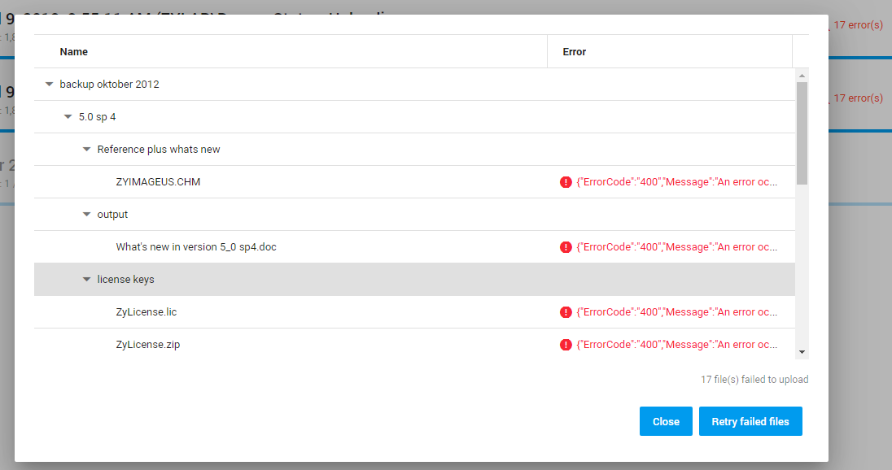
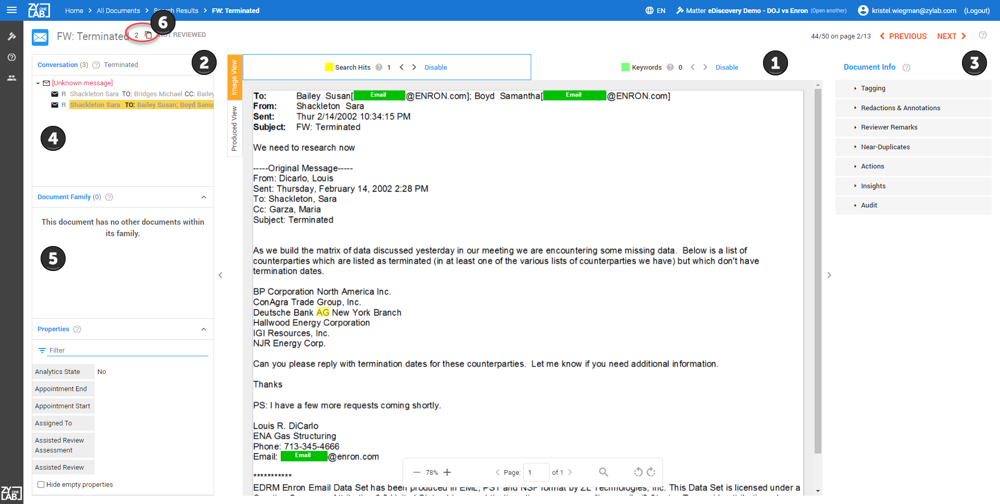

In the pane on the right you see 3 parts of topics that are being re-used.
If you want to re-use one of them, add it like this to your content:
insert part: 'Create New Matter'
If you want to re-use another part of a longer topic, first indicate which topic you want to re-use and then describe which part.
Like this:
insert: 'Search Overview' part: Saved Searches
Create New Matter
The section below (between the lines) is part of the topic Create Matter.Only the content between the lines will be re-used.
start
Note: Depending on the permissions you have received, you may not be able to create a matter.
Instructions
-
Go to the Select Matter page via
 orand click
orand click

The Create Matter screen appears. - Define a Matter Name.
- Select a Matter template.
- eDiscovery_EU
- eDiscovery_US
- FOIA_US
- Wob
- Woo_actief
- Woo_passief
-
Select a Processing Rule.
- Deduplication_NoOCR
Data will be processed without OCR. - Deduplication_NoOCR_AudioSearch
Data will be processed without OCR and with Audio Search. - Deduplication_OCR
Data will be processed with OCR. - Deduplication_OCR_AudioSearch
Data will be processed with OCR and Audio Search. - NoDeduplication_NoOCR
Data will be processed without OCR and Deduplication. - NoDeduplication_NoOCR_AudioSearch
Data will be processed without OCR and Deduplication, but with Audio Search. - NoDeduplication_OCR
Data will be processed with OCR but without Deduplication. - NoDeduplication_OCR_AudioSearch
Data will be processed with OCR and Audio Search, but without Deduplication.
- Deduplication_NoOCR
- Click Save.
-
Open your newly created matter from the Select Matter screen.
Note: New matters are always displayed in the top left corner as matters are sorted on last created date.
end
Upload Data
The section below (between the lines) is part of the topic Upload.Only the content between the lines will be re-used.
start
-
On the Home page, select

-
On the Upload page, select + Upload

Select one of the following upload options:
Status
After defining and starting your upload, you will return to the main Upload page. Here you can view the status and progress of all uploads.
The status of an upload can be one of the following:
- Uploading
The files/folders are being uploaded. - Upload complete, waiting for transfer to processing
The uploaded files/folders are pending to get started with processing. - Upload complete, processing
The uploaded files/folders are being processed. - Abandoned
The upload has been interrupted or timed-out. - Deleting
The upload is being deleted. - Upload complete, waiting for review
The uploaded files/folders are processed and are ready to be reviewed. - Upload complete, in review
The uploaded files/folders are processed and being reviewed.
Additional Status information
-
By default, only two uploads can be in progress (are active) simultaneously.
When a third upload is added, it will be paused (inactive) until one of the two previous uploads is finished.
Note 1: If you pause an active upload, the inactive upload that is next in queue will start automatically.
Note 2: If you start an inactive upload, an active upload will be paused.
-
During uploading, you can view how many documents are already uploaded,
processed or completed.

-
When some files are not completed (for example, corrupted or password protected), the progress line and status line text is orange to warn you.

-
When an error occurs during upload, you will be warned with a yellow background and red text. Also, the number of errors is shown.

You can choose to pause/resume, delete, retry an upload or download the uploaded files/folders using the icons behind each upload.
The available options depend on the status of the upload.
-
Pause an upload by clicking Pause upload:

-
Resume by clicking Resume upload
When you resume after navigating to another page in ZyLAB ONE, define Resume upload.
Select the same files/folders again (files already uploaded, will not be uploaded again), define the custodian/source again and start the upload.
-
Delete an upload by clicking Delete upload:

-
Retry failed files by clicking Retry to upload failed files:
-
View errors that were found during upload by clicking the red warning sign:


Close the log file or Retry failed files.
end
Document View
The section below (between the lines) is part of the topic Review & Redact.Only the content between the lines will be re-used.
start
Document View
To view a document simply select it from the list view grid from the Document List view.

The document viewer is divided between the document image (1), which can be viewed as either the processed image or in the 'as produced view', and informational panes (2) on the left and action panes (3) on the right.
Use the directional arrows at the top of the screen to advance to the next document in your review.

In order to maximize review efficiency, ZyLAB ONE presents documents in context of their relationship to other documents. This means that when viewing an email, not only will you be able to see all attachments to that email, but also the entire email conversation or thread. In addition, the document properties (or the metadata) can be reviewed—see Conversation, Document Family & Fields to learn more.
Email Conversations(4) - The Conversation Panel is displayed when an email is being viewed and shows the email thread of the email displayed in the document viewer. The email being viewed is highlighted in yellow within the thread. Click on an email message to open it in
Document View Families (5) - The Document Family panel is displayed when a non-email document is being viewed or if there are attachments to an email that is being viewed. The document being viewed is highlighted in yellow. Click on any document in the list to open it in the viewer.
Duplicates (6) – When viewing a document, ZyLAB ONE provides direct insight into exact duplicates of the document you are viewing. Select the
 icon to view the list of duplicates.
icon to view the list of duplicates.
Tip: When hidden content is detected with ZyLAB’s Hidden Content, you are notified with the
 icon next to the document name.
icon next to the document name.end